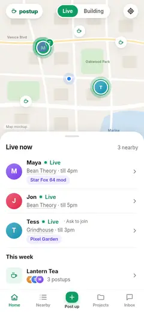
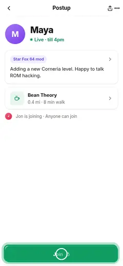
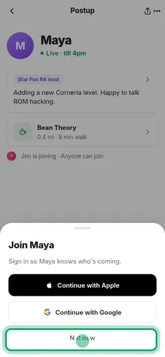
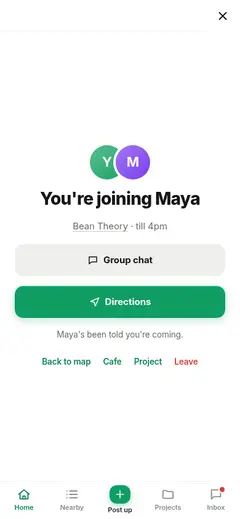
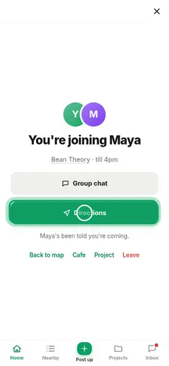

Steps and branches [M1028]
- 1

Home page (/)“Curious; sees people live right now”arrives at / - 2

Postup · anyone can join“Tempted by one postup”taps a live row - 3

Sign-in sheet · join“Wants to join; asked to sign in”taps Join 🔒Same next step in: Share link to a live postup+7 other links from this page (site map) - 4

You're joining“Signed in; committed”signs in4 branches

“On the way”taps Directions → #joined · Cautious joiner checks a few postups, then joins, step 10 “Needs the route”taps Directions → #joined · Quick joiner, step 4
“Needs the route”taps Directions → #joined · Quick joiner, step 4 “Coordinating”opens chat → #chat · Share link to a live postup, step 4
“Coordinating”opens chat → #chat · Share link to a live postup, step 4 “Backing out politely”taps Leave → #joined · Leave a postup you joined, step 2⏏End of flowLeaves the site or stays on #joined+11 other links from this page (site map)
“Backing out politely”taps Leave → #joined · Leave a postup you joined, step 2⏏End of flowLeaves the site or stays on #joined+11 other links from this page (site map)
Connected flows
Cautious joiner checks a few postups, then joins 1↗ 1↘Quick joiner 1↗ 1↘Share link to a live postup 1↗ 1↘Curious browser: live now, then past content 1↗ 0↘Stumbled on it: what is this? 1↗ 0↘Leave a postup you joined 1↗ 0↘
Edge cases
- Not now on the sheet: stays on the postup, still signed out. [drawn] [M1024]
- Switches to Building to look at projects first. [M1018b] [M1024]
Success
- No sign-in before an action. [FS]
- After sign-in the original action completes. [M1018] [M1024]